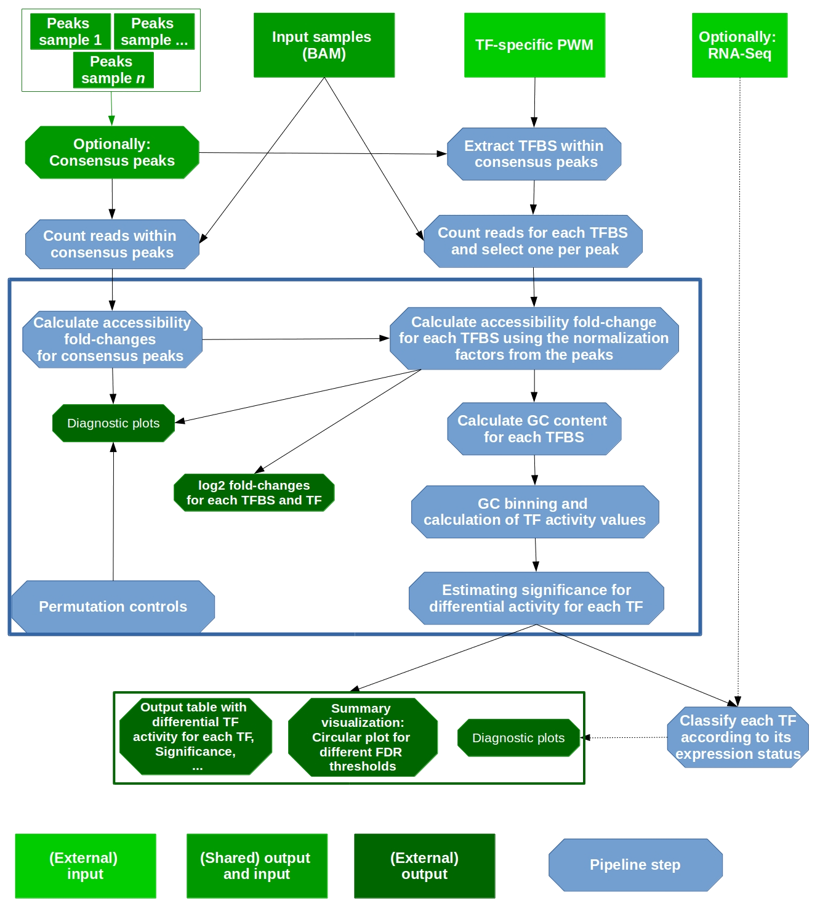
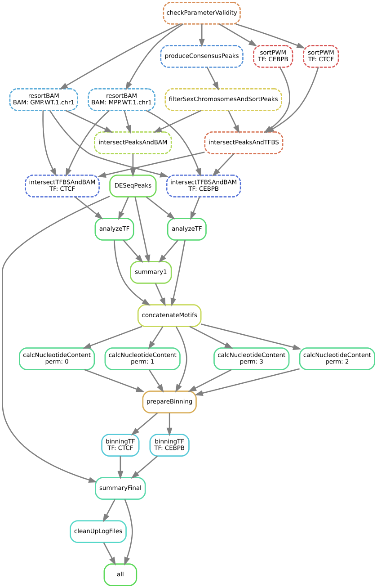

Workflow¶
The workflow is illustrated by the following two Figures. First, we show a schematic of the diffTF workflow to illustrate concepts:

Schematic of the diffTF workflow, with input and output of the pipeline highlighted.
{kind=link}
We now show which rules are executed by Snakemake for a specific example 8see the caption of the image):

Exact workflow (a so-called directed acyclic graph, or DAG) that is executed when calling Snakemake for an easy of example with two TFs (CEBPB and CTCF) for the two samples GMP.WT1 and MPP.WT1. Each node represents a rule name as defined in the Snakefile, and each arrow a dependency.
{kind=link}
Input¶
Summary¶
As input for diffTF for your own analysis, the following data are needed:
- BAM file with aligned reads for each sample (see PARAMETER summaryFile)
- genome reference fasta that has been used to produce the BAM files (see PARAMETER refGenome_fasta)
- Optionally: corresponding RNA-Seq data (see PARAMETER RNASeqCounts)
In addition, the following files are need, all of which we provide already for human hg19, hg38 and mouse mm10:
- TF-specific list of TFBS (see PARAMETER dir_TFBS)
- mapping table (see PARAMETER HOCOMOCO_mapping)
General configuration file¶
To run the pipeline, a configuration file that defines various parameters of the pipeline is required.
Note
Please note the following important points:
- the name of this file is irrelevant, but it must be in the right format (JSON) and it must be referenced correctly when calling Snakemake (via the
--configfileparameter). We recommend naming itconfig.json - neither section nor parameter names must be changed.
- For parameters that specify a path, both absolute and relative paths are possible. We recommend specifying an absolute path. Relative paths must be specified relative to the Snakemake working directory.
- For parameters that specify a directory, there should be no trailing slash.
In the following, we explain all parameters in detail, organized by section names.
SECTION par_general¶
PARAMETER outdir¶
- Summary
- String. Default “output”. Root output directory.
- Details
- The root output directory where all output is stored.
PARAMETER regionExtension¶
- Summary
- Integer > 0. Default 100. Target region extension in base pairs.
- Details
- Specifies the number of base pairs each target region (from the peaks file) should be extended in both 5’ and 3’ direction.
PARAMETER comparisonType¶
- Summary
- String. Default ‘’.
- Details
- This parameter helps to organize complex analysis for which multiple different types of comparisons should be done. Set it to a short but descriptive name that summarizes the type of comparison you are making or the types of cells you compare. The value of this parameter appears as prefix in most output files created by the pipeline. It may also be empty.
PARAMETER designContrast¶
- Summary
- String. Default “~ Treatment + conditionSummary”. Design formula for the differential accessibility analysis in DESeq2.
- Details
- This important parameter defines the actual contrast that is done in the differential analysis. That is, which groups of samples are being compared? Examples include mutant vs wildtype, mutated vs. unmutated, etc. The last element in the formula must always be “conditionSummary”, which defines the two groups that are being compared. This name is currently hard-coded and required by the pipeline. Our pipeline allows including additional variables to model potential confounding variables, like gender, batches etc. For each additional variable that is part of the formula, a corresponding and identically named column in the sample summary file must be specified.
PARAMETER designVariableTypes¶
- Summary
- String. Default “Treatment:factor, Condition:factor”.
- Details
The data types of all elements listed in designContrast. Names must be separated by commas, spaces are allowed and will be eliminated automatically. The data type must be specified with a “:”, followed by either “numeric”, “integer”, “logical”, or “factor”.
Note
Importantly, if the variable of interest is continuous-valued (i.e., marked as being integer or numeric), then the reported log2 fold change is per unit of change of that variable. That is, in the final circular plot, TFs displayed in the left side have a negative slope per unit of change of that variable, while TFs at the right side have a positive one.
PARAMETER nPermutations¶
- Summary
- Integer >= 0. Default 0. The number of random sample permutations.
- Details
If set to a value > 0, in addition to the real and non-permuted data, the sample conditions as specified in the sample table will be randomly permuted nPermutations times. Specifically, for the condition with fewer samples, 50% will be randomly chosen and switched with the same number of samples from the other condition. This procedure maximizes randomized conditions.
Note
Note that the running time of the pipeline will be increased when using permutations because parts of the pipeline are run for each permutation.
PARAMETER TFs¶
- Summary
- String. Default
all. Eitherallor a comma-separated list of TF names of TFs to include. If set toall, all TFs that are found in the directory as specified indir_TFBSwill be used. - Details
If the analysis should be restricted to a subset of TFs, list the names of the TF to include in a comma-separated manner here.
Note
Note that for each TF
{TF}, a corresponding file{TF}_TFBS.bedneeds to be present in the directorydir_TFBS.Warning
We strongly recommending running diffTF with as many TF as possible due to our statistical model that we use that compares against a background model.
PARAMETER dir_scripts¶
- Summary
- String. The path to the directory where the R scripts for running the pipeline are stored.
PARAMETER RNASeqIntegration¶
- Summary
- Logical. true or false. Default false. Should RNA-Seq data be integrated into the pipeline?
- Details
If set to true, RNA-Seq counts as specified in the PARAMETER RNASeqCounts will be used to classify each TF into either “activator”, “repressor”, “unknown”, or “not-expressed” for the final circular visualization and the summary table.
Note
Note that RNA-Seq integration is only included in the very last step of the pipeline, so it can also be easily integrated later.
SECTION samples¶
PARAMETER summaryFile¶
- Summary
- String. Default “samples.tsv”. Path to the sample metadata file.
- Details
- Path to a tab-separated file that summarizes the input data. See the section Input metadata and the example file for how this file should look like.
SECTION peaks¶
PARAMETER consensusPeaks¶
- Summary
- String. Default
""(empty). Path to the consensus peak file. - Details
If set to the empty string “”, the pipeline will generate a consensus peaks out of the peak files from each individual sample. For this, you need to provide the following two things:
- a peak file for each sample in the metadata file in the column
peaks, see the section Input metadata for details. - The format of the peak files, as specified in the PARAMETER peakType
If a file is provided, it must be a valid BED file with at least 3 columns:
- tab-separated columns
- no column names in the first row
- Columns 1 to 3:
- Chromosome
- Start position
- End position
- Optional:
- Identifier (will be made unique for each if this is not the case already)
- Score
- Strand
- a peak file for each sample in the metadata file in the column
PARAMETER peakType¶
- Summary
- String. Default
narrow. Format of the peaks. Only relevant if no consensus peak file has been provided (i.e., the PARAMETER consensusPeaks is empty). - Details
Only needed if no consensus peak set has been provided. All individual peak files must be in the same format. See the help for
DiffBinddbafor a full list of supported formats, the most common ones include:raw: text file file; peak score is in fourth columnbed: .bed file; peak score is in fifth columnnarrow: default peak.format: narrowPeaks file (from MACS2)
PARAMETER minOverlap¶
- Summary
- Integer >= 0 or Float between 0 and 1. Default 2. Minimum overlap for peak files for a peak to be considered into the consensus peak set. Corresponds to the
minOverlapargument in thedbafunction ofDiffBind. Only relevant if no consensus peak file has been provided (i.e., the PARAMETER consensusPeaks is empty). - Details
- Only include peaks in at least this many peak sets in the main binding matrix. If set to a value between zero and one, peak will be included from at least this proportion of peaksets. For more information, see the
minOverlapargument in thedbafunction ofDiffBind(click here).
SECTION additionalInputFiles¶
PARAMETER refGenome_fasta¶
- Summary
- String. Default ‘hg19.fasta’. Path to the reference genome FASTA file.
- Details
You need write access to the directory in which the fasta file is stored, make sure this is the case or copy the fasta file to a different directory. The reason is that the pipeline produces a fasta index file, which is put in the same directory as the corresponding fasta file. This is a limitation of samtools faidx and not our pipeline.
Note
Note that this file has to be in concordance with the input data; that is, the exact same genome assembly version must be used. In the first step of the pipeline, this is checked explicitly, and any mismatches will result in an error.
PARAMETER dir_TFBS¶
- Summary
- String. Path to the directory where the TF-specific files for TFBS results are stored.
- Details
Each TF
{TF}has to have one bed file, in the format{TF}.bed. Each file must be a valid BED6 file with 6 columns, as follows:- chromosome
- start
- end
- ID (or sequence)
- score or any other numeric column
- strand
For user convenience, we provide these files as described in the publication as a separate download:
- hg19: For a pre-compiled list of 620 human TF with in-silico predicted TFBS based on the HOCOMOCO 10 database and PWMScan for hg19, download this file: https://www.embl.de/download/zaugg/diffTF/TFBS/TFBS_hg19_PWMScan_HOCOMOCOv10.tar.gz
- hg38: For a pre-compiled list of 771 human TF with in-silico predicted TFBS based on the HOCOMOCO 11 database and FIMO from the MEME suite1 for hg38, download this file: https://www.embl.de/download/zaugg/diffTF/TFBS/TFBS_hg38_FIMO_HOCOMOCOv11.tar.gz
- mm10: For a pre-compiled list of 423 mouse TF with in-silico predicted TFBS based on the HOCOMOCO 10 database and PWMScan for mm10, download this file: https://www.embl.de/download/zaugg/diffTF/TFBS/TFBS_mm10_PWMScan_HOCOMOCOv10.tar.gz
However, you may also manually create these files to include additional TF of your choice or to be more or less stringent with the predicted TFBS. For this, you only need PWMs for the TF of interest and then a motif prediction tool.
PARAMETER RNASeqCounts¶
- Summary
- String. Default “”. Path to the file with RNA-Seq counts.
- Details
If no RNA-Seq data is included, set to the empty string “”. Otherwise, if the PARAMETER RNASeqIntegration is set to true, specify the path to a tab-separated file with normalized RNA-Seq counts. It does not matter whether the values have been variance-stabilized or not, as long as values across samples are comparable. Also, consider filtering lowly expressed genes. For guidance, you may want to read Question 4 here.
The first line must be used for labeling the samples, with column names being identical to the sample names as specific in the sample summary table (PARAMETER summaryFile). If you have RNA-Seq data for only a subset of the input samples, this is no problem - the classification will then anturally only be based on the subset. The first column must be named ENSEMBL and it must contain ENSEMBL IDs (e.g., ENSG00000028277) without dots. The IDs are then matched to the IDs from the file as specified in the PARAMETER HOCOMOCO_mapping.
PARAMETER HOCOMOCO_mapping¶
- Summary
- String. Path to the TF-Gene translation table.
- Details
If RNA-Seq integration shall be used, a translation table to associate TFs and ENSEMBL genes is needed. For convenience, we provide such a translation table compatible with the pre-provided TFBS lists. Specifically, for each of the currently three TFBS lists, we provide corresponding translation tables for:
- hg19 with HOCOMOCO 10
- hg38 with HOCOMOCO 11
- mm10 with HOCOMOCO 10
If you want to create your own version, check the example translation tables and construct one with an identical structure.
Input metadata¶
This file summarizes the data and corresponding available metadata that should be used for the analysis. The format is flexible and may contain additional columns that are ignored by the pipeline, so it can be used to capture all available information in a single place. Importantly, the file must be saved as tab-separated, the exact name does not matter as long as it is correctly specified in the configuration file. It must contain at least contain the following columns (the exact names do matter):
sampleID: The ID of the samplebamReads: path to the BAM file corresponding to the sample.Warning
All BAM files must be valid BAM files with chromosome names with chr as prefix. The pipeline may crash if the chr part is missing.
peaks: absolute path to the sample-specific peak file, in the format as given by the PARAMETER peakType. Only needed if no consensus peak file is provided.conditionSummary: String with an arbitrary condition name that defines which condition the sample belongs to. There must be only exactly two different conditions across all samples (e.g., mutated and unmutated, day0 and day10, …)if applicable, all additional variables from the design formula except
conditionSummarymust also be present as a separate column.
Output¶
The pipeline produces quite a large number of output files, only some of which are however relevant for the regular user. In the following, the directory structure and the files are briefly outlined. As some directory or file names depend on specific parameters in the configuration file, curly brackets will be used to denote that the filename depends on a particular parameter or name. For example, {comparisonType} and {regionExtension} refer to the parameters comparisonType and regionExtension as specified in the configuration file. Most files have one of the following file formats: .bed.gz (gzipped bed file) .tsv (tab-separated value, text file with tab as column separators) .rds (binary R format, read into with the function readRDS) .pdf (PDF format) .log (text format)
4.5.1 Folder FINAL_OUTPUT extension{regionExtension}: Stores results related to the user-specified extension size (PARAMETER regionExtension) {comparisonType}.allMotifs.tsv.gz: Summary table for each TFBS with the columns as follows: permutation: The number of the permutaton.
Note
Note that 0 always refers to the non-permuted, real data, while permutations > 0 reflect real permutations.
TF: name of the TF chr, MSS, MES, strand, TFBSID : Genomic location and identifier of the (extended) TFBS PSS, PES, peakID: Genomic location and annotation of the overlapping peak region baseMean, log2FoldChange , lfcSE, stat, pvalue, padj: Results from the DESeq2 analysis. See the DESeq2 documentation for details. {comparisonType}.TF_vs_peak_distribution.tsv: . The columns are as follows: TF: name of the TF permutation: The number of the permutation.
Note
Note that 0 always refers to the non-permuted, real data, while permutations > 0 reflect real permutations.
Pos_l2FC, Mean_l2FC, Median_l2FC, sd_l2FC, Mode_l2FC, skewness_l2FC: fraction of positive values, mean, median, standard deviation, mode value and Bickel’s measure of skewness of the log2 fold change distribution across all TFBS pvalue_raw and pvalue_adj: raw and adjusted (fdr) p-value of the t-test T_statistic: the value of the T statistic from the t-test TFBS_num: number of TFBS Diff_mean, Diff_median, Diff_mode, Diff_skew: Difference of the mean, median, mode, and skewness between the log2 fold-change distribution across all TFBS and the peaks, respectively {comparisonType}.summary.tsv: The final summary table that is also used for the final circular visualization (see below). The columns are as follows: TF: name of the TF permutation: The number of the permutation.
Note
Note that 0 always refers to the non-permuted, real data, while permutations > 0 reflect real permutations.
weighted_meanDifference: the weighted mean difference of the real and background distribution across all CG bins. This value is the basis for the final calculation of the x-axis position for the circular plot. Without permutations, this value is shown, while for permutations, the weighted_meanDifference_enrichment is used. weighted_Tstat: the weighted value of the T statistic across all CG bins. TFBS: The number of TF binding sites that overlap with the peaks variance: Estimated variance for the weighted_Tstat estimate that is incorporated to calculate the p-value weighted_meanDifference_enrichment: If permutations are used, the enrichment over the background is calculated based on the weighted_meanDifference values for the real and permuted data, respectively. Specifically, by default, the minimum and maximum of the permuted weighted_meanDifference values is taken as permutation thresholds, and the real weighted_meanDifference values are then divided by these thresholds to calculate an enrichment. weighted_Tstat_centralized: a centralized version of the weighted_Tstat values that is used to calculate raw p-values while including the variance also. If possible, the MLE estimate of the distribution median is used for centralization. pvalue: raw p-values pvalueAdj: adjusted p-values (FDR, Benjamini & Hochberg (1995) correction) yValue: the y-value for the plotting median.cor.tfs: the median correlation, related to the RNA-Seq classification classification: RNA-Seq classification (either activator, undetermined, repressor or not-expressed) Cohend_factor , weighted_CD, weighted_median, weighted_sd: Not used. {comparisonType}.summary.circular.pdf: The final visualization of the diffTF results. The PDF contains multiple pages, The PDF contains multiple pages, the structure of which varies depending on the parameters: Number of permutations > 0 RNA-Seq integration Pages 1-15: Visualization of the results including the permutations Pages 16-30: Visualization of the results excluding the permutations Within each of these two categories, the structure is identical (varying combinations of FDR threshold and RNA-Seq categories, see below) No RNA-Seq integration: Pages 1-5: Visualization of the results including the permutations for different FDR thresholds Pages 6-10: Visualization of the results excluding the permutations for different FDR thresholds Within each of these two categories, the structure is identical (varying combinations of FDR threshold and RNA-Seq categories, see below) Number of permutations = 0 RNA-Seq integration: Pages 1-15 show the results in a format as described below for varying combinations of FDR threshold and RNA-Seq categories No RNA-Seq integration: Pages 1-5 show the results for different FDR thresholds If RNA-Seq data is integrated, different combinations of categories are shown on each page (1:activator-undetermined-repressor-not-expressed, 2:activator-undetermined-repressor, 3:activator-repressor), which along with different FDR thresholds gives rise to multiple individual plots. The values on the x-axis denote the effect size (if permutations are incorporated enrichment over background, otherwise the mean difference between the two conditions), with higher values indicating a higher differential TF activity between the two conditions. TFs that are similarly active between the two conditions are close to 0, while TFs more active in either condition are located in the left and right part of the plot. The y-axis (radial position) denotes the statistical significance (adjusted p-values). The significance threshold is indicated as red circular line. TFs that pass the significance threshold are labeled and, if RNA-Seq data is integrated, colored according to their predicted role (see above). {comparisonType}.diagnosticPlots.pdf: Various diagnostic plots for the final TF activity values. If the number of permutations is larger than 0, the first three pages show various versions of the pemruted weighted_meanDifference values and how they relate to the real ones. Permutation 0, as used everywhere throughout the pipeline, contains the real values, while any permutation > 0 refers to an actual permutation. Page 1 shows real and permuted values, page 2 only permuted ones, page 3 a density plot of the real values with the permutation thresholds as dashed lines, inside of which TFs are not labeled as they fall within the permutation and therefore noise area. The next page shows various diagnostic plots from the locfdr package to estimate the distribution median, while the remaining plots show histograms of all relevant columns in the final output table for different sets of TFs depending on a specific FDR threshold.
4.5.2 Folder PEAKS Stores peak-associated files. if no consensus peak file was provided (PARAMETER consensusPeaks): {comparisonType}.consensusPeaks.bed and consensusPeaks_lengthDistribution.pdf: generated consensus peaks, before filtering (see below) as well as a diagnostic plot showing the length distribution of the peaks {comparisonType}.consensusPeaks.filtered.sorted.bed: Produced in rule filterSexChromosomesAndSortPeaks. Filtered consensus peaks (removal of peaks from one of the following chromosomes: chrX, chrY, chrM, chrUn*, random, hap|_gl {comparisonType}.allBams.peaks.overlaps.bed: Produced in rule intersectPeaksAndBAM. Counts for each consensus peak with each of the input BAM files {comparisonType}.sampleMetadata.rds: Produced in rule DESeqPeaks. Stores data for the input data (similar to the input sample table), for both the real data and the permutations. {comparisonType}.peaks.rds: Produced in rule DESeqPeaks. Stores all peaks that will be used in the analysis. {comparisonType}.peaks.tsv: Produced in rule DESeqPeaks. Stores the DESEq2 results of the differential accessibility analysis for the peaks. {comparisonType}.normFacs.rds: Produced in rule DESeqPeaks. Gene-specific normalization factors for each sample and peak. This file is produces after the differential accessibility analysis for the peaks. The normalization factors will be used for the TF-specific differential accessibility analysis. {comparisonType}.diagnosticPlots.peaks.pdf and {comparisonType}.diagnosticPlots.peaks_permutation{perm}.pdf for each permutation {perm}: Produced in rule DESeqPeaks. Various diagnostic plots for the differential accessibility peak analysis for the real and permuted data, respectively: (1) MA plots, (2) density plots of normalized and non-normalized counts, (3) mean-average plots (average of the log-transformed counts vs the fold-change per peak) for each of the sample pairs and (4) mean SD plots (row standard deviations versus row means) {comparisonType}.DESeq.object.rds: Produced in rule DESeqPeaks. The DESeq2 object from the differential accessibility peak analysis.
4.5.3 Folder TF-SPECIFIC Stores TF-specific files. for each TF {TF}: extension{regionExtension} {TF}.{comparisonType}.allBAMs.overlaps.bed.gz and {TF}.{comparisonType}.allBAMs.overlaps.bed.summary : Overlap and featureCounts summary file of read counts across all TFBS for all input BAM files. {TF}.{comparisonType}.output.tsv: Produced in rule analyzeTF. A summary table for the DeSeq2 analysis. See the file {comparisonType}.allMotifs.tsv.gz in the FINAL_OUTPUT folder for a column description. {TF}.{comparisonType}.summary.rds: Produced in rule analyzeTF. A summary table for the log2 fold-changes across all TFBS DESeq2 results. {TF}.{comparisonType}.diagnosticPlots.pdf and {TF}.{comparisonType}.diagnosticPlots_permutation{perm}.pdf: Produced in rule analyzeTF. Various diagnostic plots for the differential accessibility TFBS analysis for the real and permuted data, respectively. See the description of the file {comparisonType}.diagnosticPlots.peaks.pdf in the PEAKS folder, which has an identical structure. {TF}.{comparisonType}.summaryPlots.pdf and {TF}.{comparisonType}.summaryPlots_permutation{perm}.pdf: Produced in rule analyzeTF. A PDF with a summary of the DESeq2 analysis for the real and permuted data, respectively: Page 1 shows a density plot of the log2 fold-changes for the specific pairwise condition that the user selected, separately for the peaks only and across all TFBS from the specific TF. Page 2 shows the same but in a cumulative representation. {TF}.{comparisonType}.DESeq.object.rds: Produced in rule analyzeTF. Original DESeq2 object. {TF}.{comparisonType}.permutationResults.rds: Produced in rule binningTF. An rds file containing a data frame that stores the results of bin-specific results. {TF}.{comparisonType}.permutationSummary.tsv: Produced in rule binningTF. A final summary table that summarizes the results across bins by calculating weighted means. The data of this table are used for the final visualization. {TF}.{comparisonType}.covarianceResults.rds: Produced in rule binningTF. An rds file containing a data frame that stores the results of the pairwise bin covariances and the bin-specific weights.
Note
Note that covariances are only computed for the real data but not the permuted ones.
4.5.4 Folder LOGS_AND_BENCHMARKS Stores various log and error files. *.log files from R scripts: Each logfile is produced by the corresponding R script and contains debugging information as well as warnings and errors: 1.produceConsensusPeaks.R.log 2.DESeqPeaks.R.log 3.analyzeTF.{TF}.R.log for each TF {TF} 4.summary1.R.log 5.prepareBinning.log 6.binningTF.{TF}.log for each TF {TF} 7.summaryFinal.R.log *.log summary files: Summary logs for user convenience, produced at very end of the pipeline only. They should contain all errors and warnings from the pipeline run. all.errors.log all.warnings.log
4.5.5 Folder TEMP Stores temporary and intermediate files. SortedBAM: Stores sorted versions of the original BAMs that are optimized for featureCounts. {basenameBAM}.bam for each input BAM file: Produced in rule resortBAM. Resorted BAM file extension{regionExtension}: Stores results related to the user-specified extension size (PARAMETER regionExtension) {comparisonType}.allTFBS.peaks.bed.gz: Produced in rule intersectPeaksAndTFBS. BED file containing all TFBS from all TF that overlap with the peaks after motif extension {comparisonType}.{TF}.allTFBS.peaks.extension.saf for each TF {TF}: Produced in rule intersectTFBSAndBAM. TF-specific file in SAF format needed for featureCounts conditionComparison.rds: Produced in rule DESeqPeaks. Stores the condition comparison as a string. Some steps in diffTF need this file as input. for each permutation {perm}:{comparisonType}.motifs.coord.permutation{perm}.bed.gz and {comparisonType}.motifs.coord.nucContent.permutation{perm}.bed.gz: Produced in rule calcNucleotideContent, and needed subsequently for the binning. Temporary and result file of bedtools nuc, respectively. The latter contains the GC content for all TFBS. {comparisonType}.allTFData_processedForPermutations.rds and {comparisonType}.allTFUniqueData_processedForPermutations.rds. Produced in rule prepareBinning, and needed subsequently for each 6.binningTF.R step. {comparisonType}.consensusPeaks.*: Produced in rule filterSexChromosomesAndSortPeaks. Various temporary files related to the consensus peaks {comparisonType}.checkParameterValidity.done: temporary flag file {TF}_TFBS.sorted.bed for each TF {TF}: Produced in rule sortPWM. Coordinate-sorted version of the input TFBS. {comparisonType}.allTFBS.peaks.bed.gz: Produced in rule intersectPeaksAndTFBS. BED file containing all TFBS from all TF that overlap with the peaks before motif extension
Working with the pipeline and frequently asked questions¶
diffTF is programmed as a Snakemake pipeline, which offers many advantages to the user because each step can easily be modified, parts of the pipeline can be rerun, and running the pipeline on different systems is easy with minimal modifications. However, with great flexibility comes a price: the learning curve to work with the pipeline might be a bit higher, especially if you have no Snakemake experience. Here a few typical use cases, which we will extend regularly in the future if the need arises:
- I received an error, and the pipeline did not finish.
As explained in Section 4.5, you first have to identify and fix the error. Rerunning then becomes trivially easy: just restart Snakemake, it will start off where it left off: at the step that produced that error.
- I want to rerun a specific part of the pipeline only.
This common scenario is also easy to solve: Just invoke Snakemake with--forcerun {rulename}, where{rulename}is the name of the rule as defined in the Snakefile. Snakemake will then rerun the specified run and all parts downstream of the rule. If you want to avoid rerunning downstream parts (think carefully about it, as there might be changes from the rerunning that might have consequences for downstream parts also), you can combine--forcerunwith--untiland specify the same rule name for both.
- I want to modify the workflow.
Simply add or modify rules to the Snakefile, it is as easy as that.
If you feel that a particular use case is missing, let us know and we will add it here!
Handling errors¶
Error types¶
Errors occur during the Snakemake run can principally be divided into:
- Temporary errors (often when running in a cluster setting)
- might occur due to temporary problems such as bad nodes, file system issues or latencies
- rerunning usually fixes the problem already. Consider using the option –restart-times.
- Permanent errors
- indicates a real error related to the specific command that is executed
- rerunning does not fix the problem as they are systematic (such as a missing tool)
Identify the cause¶
To troubleshoot errors, you have to first locate the exact error. Depending on how you run Snakemake (i.e., in a cluster setting or not), check the following places:
- in locale mode: the Snakemake output on the console
- in cluster mode: either error, output or log file of the corresponding rule that threw the error
Fixing the error¶
After locating the error, fix it accordingly. We here provide some guidelines of different error types that may help you fixing the errors you receive:
- Errors related to erroneous input: These errors are easy to fix, and the error message should be indicative. If not, please let us know, and we improve the error message in the pipeline.
- Errors of technical nature: Errors related to memory, missing programs, R libraries etc can be fixed easily by making sure the necessary tools are installed and by executing the pipeline in an environment that provides the required technical requirements. For example, if you receive a memory-related error, try to increase the available memory. In a cluster setting, adjust the cluster configuration file accordingly by either increasing the default memory or (preferably) or by overriding the default values for the specific rule.
- Errors related to the input data: Error messages that indicate the problem might be located in the data are more difficult to fix, and we cannot provide guidelines here. Feel free to contact us.
After fixing the error, rerun Snakemake. Snakemake will continue at the point at which the error message occurred, without rerunning already successfully computed previous steps (unless specified otherwise).